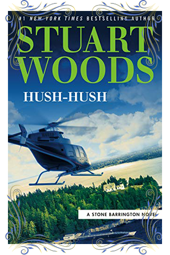
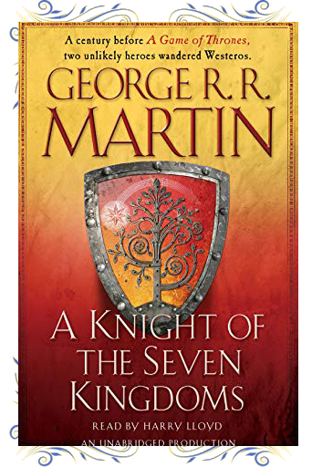

Click here if you want to read it
Stone Barrington is settling in for some downtime in New York City when an anonymous enemy makes himself known. This nameless foe's threats hit close to home, and before Stone can retaliate, the fearsome messages turn into very real consequences.

Click here if you want to read it
Taking place nearly a century before the events of A Game of Thrones, A Knight of the Seven Kingdoms compiles the first three official prequel novellas to George R. R. Martin's ongoing masterwork, A Song of Ice and Fire. These never-before-collected
adventures recount an age when the Targaryen line still holds the Iron Throne, and the memory of the last dragon has not yet passed from living consciousness.
Click here if you want to read it
The Union army may be full of bastards, but there's only one who thinks he can save the day single-handed when the Gurkish come calling: the incomparable Colonel Sand dan Glokta. .